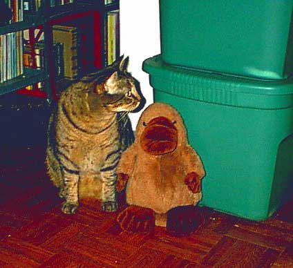
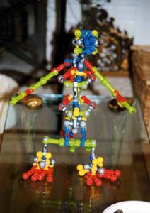

|
<< Jen's favorite molecule |
@ropine.comJen-and-Seth's Web site This site is under deconstruction. The problematic of posting a text on the Web is two-fold: (1) while the downloaded text has a pretext of immediacy and relevance, it was actually post-ed, that is, directed from the past subjectivity of an author(ity) into the indeterminate future; (2) since a soi-disant "link" between two texts is imposed by the "author" of only one, the We/b is actually an I/m, yielding no power to subvert hegemonic paradigms of discourse. |
The source code (about 250 lines) and the database design (nine tables) are available on request, especially to PostgreSQL gurus who can help me figure out why it's so dang slow...
 